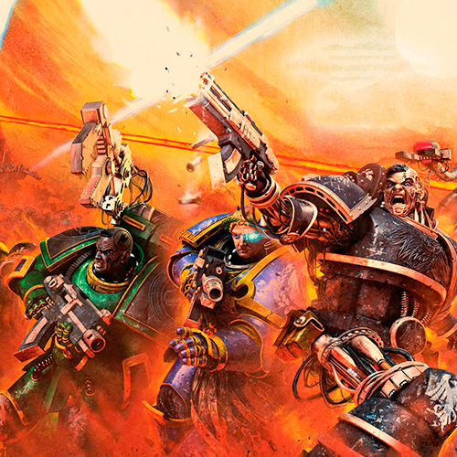

Lesson-21
динамічне підвантаження через AJAX даних з JSON файлу

CYBERNETICA
Soon after word reached Terra of Horus's nascent rebellion, Mars fell. Rogue elements within the Mechanicum priesthood, stirred by the Warmaster's promises of independence and prosperity, turned against the Imperium and forced the primarch Rogal Dorn to order an impenetrable blockade of the Red Planet. Now it has become clear that the corruption has spread too deep, and that more drastic measures must be taken if the Forge World Principal is to be reclaimed. Calling upon the expertise of those who witnessed the so-called 'Death of Innocence' firsthand, Lord Dorn and Malcador the Sigillite consider their final solution - the complete extermination of all life on Mars.